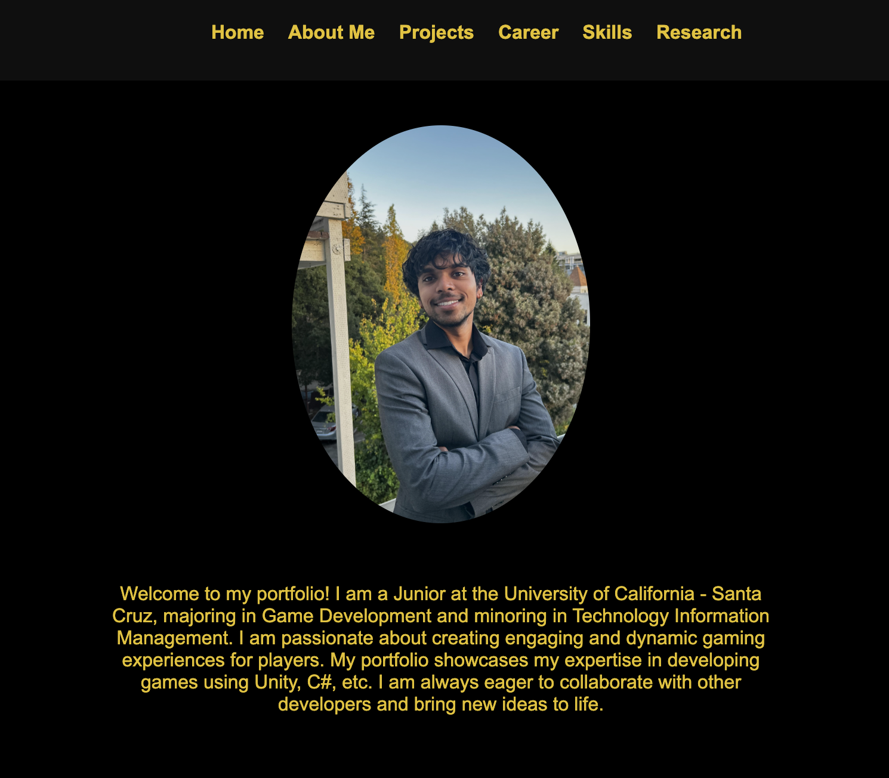

KrithikDhandapani.com
This project serves as my portfolio for everyone to see my journey through Game Development and Software Engineering. Its a way for others and myself to see the progress I have made and the knowledge I have gained. My website was made through Visual Studio Code and programmed using HTML, CSS, and Javascript. As you explore though the site, you can learn more about my interests, projects, skills, research, and more. I built this website because I think it is the easiest way for people who are not my family and friends to get to know me better. Have fun exploring!
